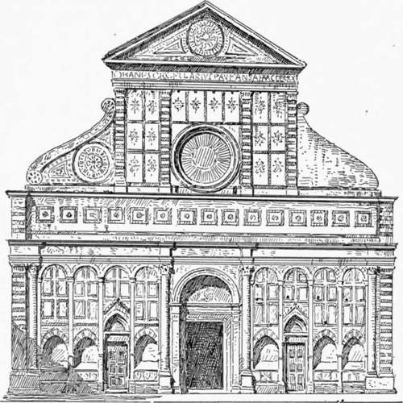

Church Architecture Of The Florentine Renaissance. Part 3
Description
This section is from the book "Character Of Renaissance Architecture", by Charles Herbert Moore. Also available from Amazon: Character of Renaissance Architecture.
Church Architecture Of The Florentine Renaissance. Part 3
The church of Santo Spirito, built after the architect's death, closely resembles San Lorenzo in its architectural character, though it is larger in scale. The entablature blocks occur in the arcades here also, but instead of a dome over the crossing as in San Lorenzo, there is a circular celled vault on converging ribs, like the vault of the Pazzi chapel. The interior is spacious and finely proportioned, but it presents no features that afford further illustration of the progress of neo-classic design.
The retrospective movement was carried further by the Florentine scholar and architect Leon-Batista Alberti, who, says Milizia, is justly regarded as one of the principal restorers of the architecture of antiquity.1 His chief designs in church architecture are found in Santa Maria Novella of Florence, in San Francesco of Rimini, and in Sant' Andrea of Mantua. The first two of these are mediaeval structures in which Alberti's work is confined to the remodelling of the exteriors, but the last was wholly designed by him, though the work was not completed within his lifetime, and the dome over the crossing is the work of another architect of a later time.
How much Alberti did to the facade of Santa Maria Novella, the part of the building to which his work is confined is not very clear. Vasari speaks vaguely as if the whole front were by him,2 but from a foot-note by Milanesi it would appear that he merely completed a part which had been left unfinished by an older architect, and the work remaining by the older architect is said to include all below the first cornice except the central portal, which is attributed to Alberti. Milizia says3 that although it is common to attribute the whole facade to Alberti, it has too much Gothic character to be entirely by him, and that therefore a part of it may, with more probability of correctness, be assigned to Giovanni Bettini, an older architect; but he adds that the central portal is undoubtedly by Alberti.
An examination of the monument itself would seem to show that the part below the first entablature, with exception of the great Corinthian columns and the central portal, is mediaeval work (Fig. 17). The whole Corinthian order, with the angle pilasters and the pedestals on which the order is raised, look like neo-classic work, and are probably by Alberti. This order is wholly different in character from mediaeval design, and quite foreign to the mixture of Pisan Romanesque and Italian Gothic features of the distinctly mediaeval part with which it is associated. The columns of the order are, however, of mediaeval proportions, being eleven or twelve diameters in height, and they are built of small stones in a common mediaeval manner. But these proportions were necessitated by the older work to which the order had to be adjusted, and the small masonry of which they are composed makes them harmonize with the older of this feature in another work by the same architect, says : " In these arcades Alberti observed a rule always followed in the good ancient times, but since universally disregarded. The arches are not sprung from the columns, because this would be incorrect, but architraves [sic] are interposed. It would now be ridiculous to inculcate the importance of this rule, which is familiar to children." 1 This, like other notions to which the parts. The central portal has a round arch on fluted Corinthian pilasters framing in a deeply recessed rectangular opening with a classic lintel and jamb mouldings. It is noticeable that the arch does not spring directly from the capitals of the pilasters, but that the entablature block is interposed, as in Brunelleschi's arcades of San Lorenzo and Santo Spirito. Milizia, speaking Renaissance gave currency, is a mistake. In inserting the entablature block at the arch impost Alberti did not follow a rule always observed in the ancient times. This feature is uncommon in ancient Roman art. It was, as before remarked, introduced by the late Roman architects, who, being accustomed to the use of the entablature over the column in the trabeate system which they had borrowed from the Greeks, did not see, when they began to spring arches from columns, that the entablature had no longer any reason for existence. The radical nature of the change wrought in architecture by the introduction of the arch was never grasped by the imperial Roman designers. First framing the arch with an order, thus uniting two contradictory systems, they afterwards, when, as in the basilica of Maxentius, springing the arches of vaulting from columns, thought that the rules required them to crown these columns with bits of entablature.
Fig. 17. — Facade of Santa Maria Novella.
1 Op. cit, vol. i, p. 200. 2 Op. cit., vol. 2, p. 541.
3 Op. cit., vol. i, p. 201.
1 Op. cit., vol. i, p. 201.
This facade appears to have been originally designed in the Pisan Romanesque style, with a tall, shallow blind arcade on pilaster-strips reaching across "the ground story. But the Romanesque character was modified in some details, the portals having pointed arches, pointed arched niches sheltering tombs being ranged in the intervals between the pilaster-strips. How far the upper part of this facade had been left incomplete until Alberti took it in hand we have no means of knowing; but no mediaeval features occur in it as it now stands, except the circular opening in the central compartment. Upon this front, then, Alberti appears to have ingrafted the great Corinthian order, placing a wide pilaster paired with a column on each angle, breaking the entablature into ressauts to cover the columns, which have nothing else to support, and replacing the central portal with the existing one in the revived classic style. The preservation of the greater part of the mediaeval work in the ground story made it impossible to get in more than the four columns in the great order, and these are necessarily spaced in an unclassic way, with a narrow interval in the middle and very wide ones on either side. To the upper compartment the architect has given an order of pilasters surmounted by a classic pediment, and flanked by screen walls over the aisle compartments in the form of gigantic reversed consoles, apparently the first of these features which became common thereafter in Renaissance fronts. The pilasters of this order are again four in number, and are set in pairs on either side of the circular opening, the width of this opening making it impossible to space them otherwise. We thus have in the clerestory compartment of this facade a forced arrangement of pilasters, which may have led to that alternation of wide and narrow intervals that became very common in the subsequent architecture of the Renaissance. The attic over the ground story, which extends across the entire front and answers to nothing in the interior of the building, is presumably also by Alberti.
Continue to:
- prev: Church Architecture Of The Florentine Renaissance. Part 2
- Table of Contents
- next: Church Architecture Of The Florentine Renaissance. Part 4